Finding Limits: Numerical and Graphical Approaches
Intuitively, we know what a limit is. A car can go only so fast and no faster. A trash can might hold 33 gallons and no more. It is natural for measured amounts to have limits. What, for instance, is the limit to the height of a woman? The tallest woman on record was Jinlian Zeng from China, who was 8 ft 1 in.https://en.wikipedia.org/wiki/Human_height and http://en.wikipedia.org/wiki/List_of_tallest_people Is this the limit of the height to which women can grow? Perhaps not, but there is likely a limit that we might describe in inches if we were able to determine what it was.
To put it mathematically, the function whose input is a woman and whose output is a measured height in inches has a limit. In this section, we will examine numerical and graphical approaches to identifying limits.
Understanding Limit Notation
We have seen how a sequence can have a limit, a value that the sequence of terms moves toward as the number of terms increases. For example, the terms of the sequence
gets closer and closer to 0. A sequence is one type of function, but functions that are not sequences can also have limits. We can describe the behavior of the function as the input values get close to a specific value. If the limit of a function then as the input gets closer and closer to the output y-coordinate gets closer and closer to We say that the output “approaches”
Figure 1 provides a visual representation of the mathematical concept of limit. As the input value approaches the output value approaches
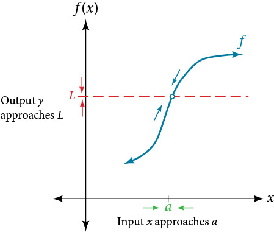
We write the equation of a limit as
This notation indicates that as approaches both from the left of and the right of the output value approaches
Consider the function
We can factor the function as shown.
Notice that cannot be 7, or we would be dividing by 0, so 7 is not in the domain of the original function. In order to avoid changing the function when we simplify, we set the same condition, for the simplified function. We can represent the function graphically as shown in Figure 2.
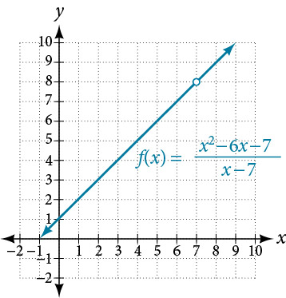
What happens at is completely different from what happens at points close to on either side. The notation
indicates that as the input approaches 7 from either the left or the right, the output approaches 8. The output can get as close to 8 as we like if the input is sufficiently near 7.
What happens at When there is no corresponding output. We write this as
This notation indicates that 7 is not in the domain of the function. We had already indicated this when we wrote the function as
Notice that the limit of a function can exist even when is not defined at Much of our subsequent work will be determining limits of functions as nears even though the output at does not exist.
Understanding the Limit of a Function
For the following limit, define and
Solution
First, we recognize the notation of a limit. If the limit exists, as approaches we write
We are given
This means that
Understanding Left-Hand Limits and Right-Hand Limits
We can approach the input of a function from either side of a value—from the left or the right. Figure 3 shows the values of
as described earlier and depicted in Figure 2.
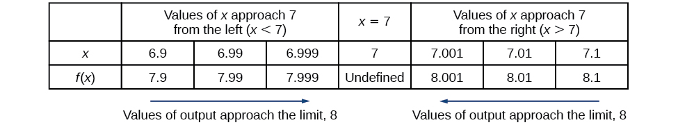
Values described as “from the left” are less than the input value 7 and would therefore appear to the left of the value on a number line. The input values that approach 7 from the left in Figure 3 are and The corresponding outputs are and These values are getting closer to 8. The limit of values of as approaches from the left is known as the left-hand limit. For this function, 8 is the left-hand limit of the function as approaches 7.
Values described as “from the right” are greater than the input value 7 and would therefore appear to the right of the value on a number line. The input values that approach 7 from the right in Figure 3 are and The corresponding outputs are and These values are getting closer to 8. The limit of values of as approaches from the right is known as the right-hand limit. For this function, 8 is also the right-hand limit of the function as approaches 7.
Figure 3 shows that we can get the output of the function within a distance of 0.1 from 8 by using an input within a distance of 0.1 from 7. In other words, we need an input within the interval to produce an output value of within the interval
We also see that we can get output values of successively closer to 8 by selecting input values closer to 7. In fact, we can obtain output values within any specified interval if we choose appropriate input values.
Figure 4 provides a visual representation of the left- and right-hand limits of the function. From the graph of we observe the output can get infinitesimally close to as approaches 7 from the left and as approaches 7 from the right.
To indicate the left-hand limit, we write
To indicate the right-hand limit, we write
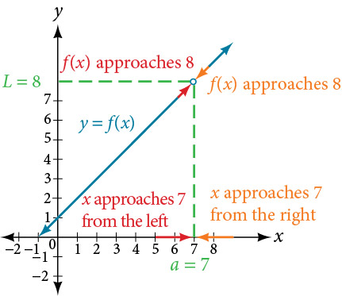
Understanding Two-Sided Limits
In the previous example, the left-hand limit and right-hand limit as approaches are equal. If the left- and right-hand limits are equal, we say that the function has a two-sided limit as approaches More commonly, we simply refer to a two-sided limit as a limit. If the left-hand limit does not equal the right-hand limit, or if one of them does not exist, we say the limit does not exist.
Finding a Limit Using a Graph
To visually determine if a limit exists as approaches we observe the graph of the function when is very near to In Figure 5 we observe the behavior of the graph on both sides of
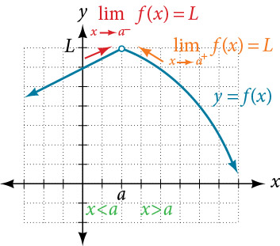
To determine if a left-hand limit exists, we observe the branch of the graph to the left of but near This is where We see that the outputs are getting close to some real number so there is a left-hand limit.
To determine if a right-hand limit exists, observe the branch of the graph to the right of but near This is where We see that the outputs are getting close to some real number so there is a right-hand limit.
If the left-hand limit and the right-hand limit are the same, as they are in Figure 5, then we know that the function has a two-sided limit. Normally, when we refer to a “limit,” we mean a two-sided limit, unless we call it a one-sided limit.
Finally, we can look for an output value for the function when the input value is equal to The coordinate pair of the point would be If such a point exists, then has a value. If the point does not exist, as in Figure 5, then we say that does not exist.
Finding a Limit Using a Graph
Solution
- Looking at Figure 6:
- when but infinitesimally close to 2, the output values get close to
- when but infinitesimally close to 2, the output values approach
- does not exist because the left and right-hand limits are not equal.
- because the graph of the function passes through the point or
- Looking at Figure 7:
- when but infinitesimally close to 2, the output values approach
- when but infinitesimally close to 2, the output values approach
- because the left and right-hand limits are equal.
- because the graph of the function passes through the point or
Finding a Limit Using a Table
Creating a table is a way to determine limits using numeric information. We create a table of values in which the input values of approach from both sides. Then we determine if the output values get closer and closer to some real value, the limit
Let’s consider an example using the following function:
To create the table, we evaluate the function at values close to We use some input values less than 5 and some values greater than 5 as in Figure 9. The table values show that when but nearing 5, the corresponding output gets close to 75. When but nearing 5, the corresponding output also gets close to 75.
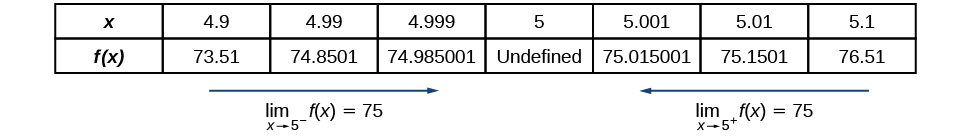
Because
then
Remember that does not exist.
Finding a Limit Using a Table
Numerically estimate the limit of the following expression by setting up a table of values on both sides of the limit.
Solution
We can estimate the value of a limit, if it exists, by evaluating the function at values near We cannot find a function value for directly because the result would have a denominator equal to 0, and thus would be undefined.
We create Figure 10 by choosing several input values close to with half of them less than and half of them greater than Note that we need to be sure we are using radian mode. We evaluate the function at each input value to complete the table.
The table values indicate that when but approaching 0, the corresponding output nears
When but approaching 0, the corresponding output also nears
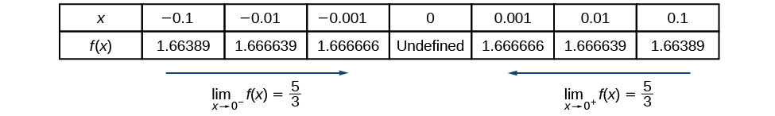
Because
then
Using a Graphing Utility to Determine a Limit
With the use of a graphing utility, if possible, determine the left- and right-hand limits of the following function as approaches 0. If the function has a limit as approaches 0, state it. If not, discuss why there is no limit.
Solution
We can use a graphing utility to investigate the behavior of the graph close to Centering around we choose two viewing windows such that the second one is zoomed in closer to than the first one. The result would resemble Figure 12 for by
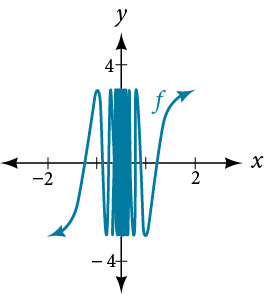
The result would resemble Figure 13 for by
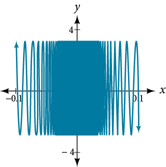
The closer we get to 0, the greater the swings in the output values are. That is not the behavior of a function with either a left-hand limit or a right-hand limit. And if there is no left-hand limit or right-hand limit, there certainly is no limit to the function as approaches 0.
We write
Key Concepts
- A function has a limit if the output values approach some value as the input values approach some quantity See Example 1.
- A shorthand notation is used to describe the limit of a function according to the form which indicates that as approaches both from the left of and the right of the output value gets close to
- A function has a left-hand limit if approaches as approaches where A function has a right-hand limit if approaches as approaches where
- A two-sided limit exists if the left-hand limit and the right-hand limit of a function are the same. A function is said to have a limit if it has a two-sided limit.
- A graph provides a visual method of determining the limit of a function.
- If the function has a limit as approaches the branches of the graph will approach the same coordinate near from the left and the right. See Example 2.
- A table can be used to determine if a function has a limit. The table should show input values that approach from both directions so that the resulting output values can be evaluated. If the output values approach some number, the function has a limit. See Example 3.
- A graphing utility can also be used to find a limit. See Example 4.
Section Exercises
Verbal
Explain the difference between a value at and the limit as approaches
Solution
The value of the function, the output, at is When the is taken, the values of get infinitely close to but never equal As the values of approach from the left and right, the limit is the value that the function is approaching.
Explain why we say a function does not have a limit as approaches if, as approaches the left-hand limit is not equal to the right-hand limit.
Graphical
For the following exercises, estimate the functional values and the limits from the graph of the function provided in Figure 14.
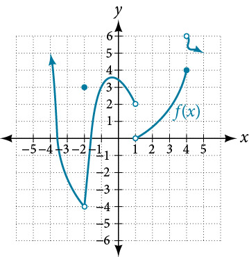
Solution
–4
Solution
–4
Solution
2
Solution
does not exist
Solution
4
Solution
does not exist
For the following exercises, draw the graph of a function from the functional values and limits provided.
, , , , ,
Solution
Answers will vary.
, , , ,
Solution
Answers will vary.
, , , ,
Solution
Answers will vary.
, , , ,
Solution
Answers will vary.
, , , ,
Solution
Answers will vary.
, , , ,
Solution
Answers will vary.
, , , ,
Solution
Answers will vary.
For the following exercises, use a graphing calculator to determine the limit to 5 decimal places as approaches 0.
Solution
7.38906
Solution
54.59815
Based on the pattern you observed in the exercises above, make a conjecture as to the limit of
Solution
For the following exercises, use a graphing utility to find graphical evidence to determine the left- and right-hand limits of the function given as approaches If the function has a limit as approaches state it. If not, discuss why there is no limit.
Solution
Numeric
For the following exercises, use numerical evidence to determine whether the limit exists at If not, describe the behavior of the graph of the function near Round answers to two decimal places.
Solution
Solution
Solution
Solution
does not exist. Function values decrease without bound as approaches –0.5 from either left or right.
For the following exercises, use a calculator to estimate the limit by preparing a table of values. If there is no limit, describe the behavior of the function as approaches the given value.
Solution
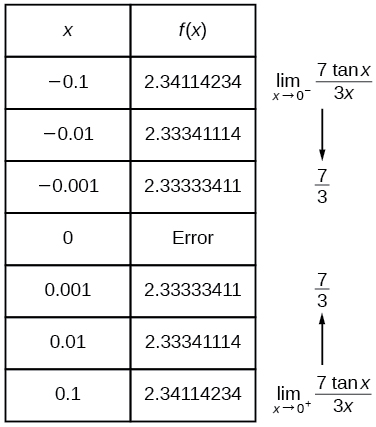
Solution
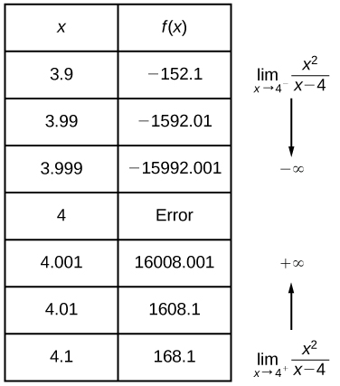
For the following exercises, use a graphing utility to find numerical or graphical evidence to determine the left and right-hand limits of the function given as approaches If the function has a limit as approaches state it. If not, discuss why there is no limit.
Solution
Solution
and since the right-hand limit does not equal the left-hand limit, does not exist.
Solution
does not exist. The function increases without bound as approaches from either side.
Solution
does not exist. Function values approach 5 from the left and approach 0 from the right.
Use numerical and graphical evidence to compare and contrast the limits of two functions whose formulas appear similar: and as approaches 0. Use a graphing utility, if possible, to determine the left- and right-hand limits of the functions and as approaches 0. If the functions have a limit as approaches 0, state it. If not, discuss why there is no limit.
Extensions
According to the Theory of Relativity, the mass of a particle depends on its velocity . That is
where is the mass when the particle is at rest and is the speed of light. Find the limit of the mass, as approaches
Solution
Through examination of the postulates and an understanding of relativistic physics, as Take this one step further to the solution,
Allow the speed of light, to be equal to 1.0. If the mass, is 1, what occurs to as Using the values listed in Table 1, make a conjecture as to what the mass is as approaches 1.00.
| 0.5 | 1.15 |
| 0.9 | 2.29 |
| 0.95 | 3.20 |
| 0.99 | 7.09 |
| 0.999 | 22.36 |
| 0.99999 | 223.61 |
Analysis
Recall that is a line with no breaks. As the input values approach 2, the output values will get close to 11. This may be phrased with the equation which means that as nears 2 (but is not exactly 2), the output of the function gets as close as we want to or 11, which is the limit as we take values of sufficiently near 2 but not at